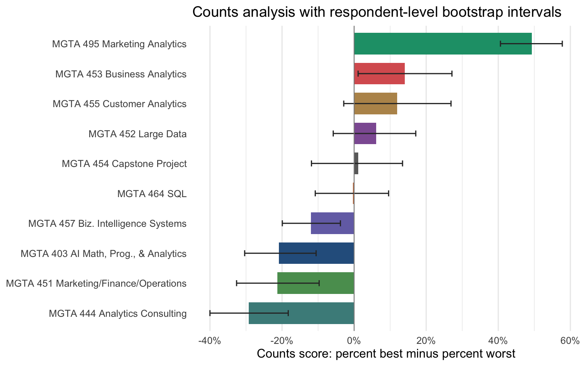
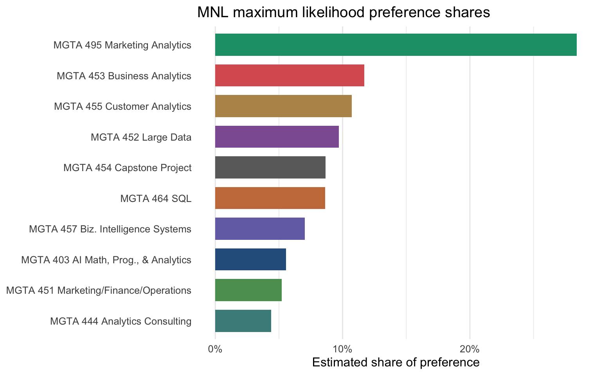
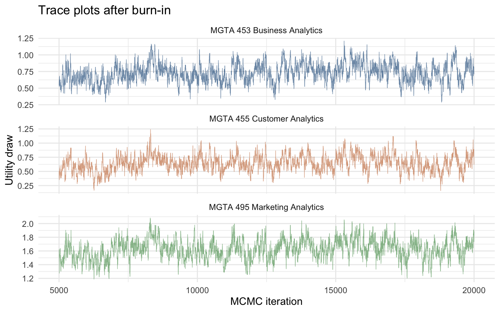
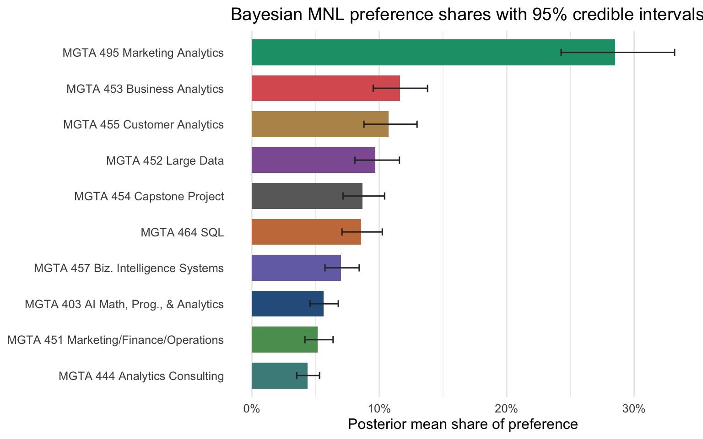
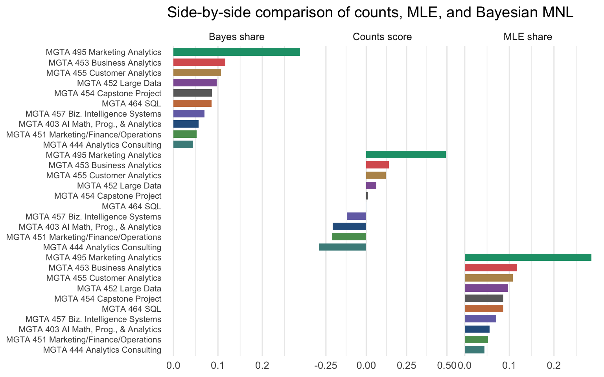

| Metric | Value |
|---|---|
| Respondents | 85 |
| MaxDiff tasks per respondent | 8 |
| Items shown per task | 4 |
| Course items in the study | 10 |
| MaxDiff tasks analyzed | 680 |
| Task-rows analyzed | 2720 |
| Excluded follow-up tasks | 595 |
MaxDiff Analysis of MSBA Class Preferences
Counts, maximum likelihood, and Bayesian estimation of the MNL model
MaxDiff
Conjoint Analysis
MNL
Bayesian Estimation
Marketing Analytics
A MaxDiff / Best-Worst Scaling analysis of MSBA course preferences using counts, multinomial logit MLE, and Bayesian MNL.
1 / 5
Introduction
Conjoint analysis is useful when the decision we care about is a choice, not a rating. Sawtooth Software describes conjoint as a quantitative marketing research method that estimates how much people value different product or service attributes by making them evaluate realistic tradeoffs. In a similar spirit, MaxDiff, also called Best-Worst Scaling, asks respondents to choose the most-preferred and least-preferred item from a small set. That design is attractive because people are often better at relative tradeoffs than at putting everything on a 1 to 10 scale.
The broader business motivation is not abstract. In the HBR article “When the CEO Becomes the Brand”, Elie Ofek and Bryan K. Orme discuss how public perceptions of Elon Musk may change what different consumers feel about Tesla. That is exactly the kind of setting where stated ratings can be mushy, while structured choice data can reveal how much brand, product, price, and identity tradeoffs matter.
Here, the products are not cars. They are the 10 core MSBA classes at UCSD Rady. Each survey task showed a student a subset of classes and asked for the best and worst option. I estimate course preferences three ways:
- A counts score: percent picked best minus percent picked worst.
- A multinomial logit model fit by maximum likelihood.
- The same MNL model fit with a Bayesian Metropolis-Hastings sampler.
The expectation is that all three approaches should agree at the top and bottom of the ranking. The middle of the table is where uncertainty should show up.
The Data
The attached choice file contains two kinds of tasks. The first kind is the MaxDiff design used in this assignment: 4 course items per screen, exactly one best pick, and exactly one worst pick. The file also contains later 2-option follow-up tasks involving an unlabeled item 11. Because the label file defines only the 10 course items, and because the assignment asks for the 4-option MaxDiff structure, I exclude those follow-up tasks from the analysis below.
The sanity check passes for every MaxDiff task: each one has four rows, one best pick, one worst pick, and two unchosen items.
| Tasks checked | Tasks passing | Tasks failing |
|---|---|---|
| 680 | 680 | 0 |
The exposure counts are also well balanced. Each course appears roughly the same number of times, which is what we want from a MaxDiff design.
| Item | Class | Times shown |
|---|---|---|
| 1 | MGTA 403 AI Math, Prog., & Analytics (Summer with Nijs) | 273 |
| 2 | MGTA 464 SQL (Summer with Nijs) | 274 |
| 3 | MGTA 451 Marketing/Finance/Operations (Summer with Wilbur/Buti/Shin) | 272 |
| 4 | MGTA 452 Large Data (Fall with Hansen) | 276 |
| 5 | MGTA 453 Business Analytics (Fall with August) | 270 |
| 6 | MGTA 444 Analytics Consulting (Winter with Peterson) | 267 |
| 7 | MGTA 455 Customer Analytics (Winter with Nijs) | 276 |
| 8 | MGTA 454 Capstone Project (Spring with Advisor) | 272 |
| 9 | MGTA 495 Marketing Analytics (Spring with Yavorsky) | 274 |
| 10 | MGTA 457 Biz. Intelligence Systems (Fall with Schibler) | 266 |
Counts Analysis
The simplest MaxDiff summary is a counts score. For each class, I calculate the percent of times it was selected as best, subtract the percent of times it was selected as worst, and then rank the classes by that difference:
\[ \text{score}_j = \%\text{best}_j - \%\text{worst}_j \]
A score near 1 means the course is almost always picked as best when shown. A score near -1 means it is usually picked as worst. A score near 0 means the course is either middle-of-the-pack or divisive.
| Rank | Item | Class | Times shown | Best | Worst | % best | % worst | Score |
|---|---|---|---|---|---|---|---|---|
| 1 | 9 | MGTA 495 Marketing Analytics (Spring with Yavorsky) | 274 | 147 | 12 | 53.6% | 4.4% | 0.493 |
| 2 | 5 | MGTA 453 Business Analytics (Fall with August) | 270 | 93 | 55 | 34.4% | 20.4% | 0.141 |
| 3 | 7 | MGTA 455 Customer Analytics (Winter with Nijs) | 276 | 104 | 71 | 37.7% | 25.7% | 0.120 |
| 4 | 4 | MGTA 452 Large Data (Fall with Hansen) | 276 | 77 | 60 | 27.9% | 21.7% | 0.062 |
| 5 | 8 | MGTA 454 Capstone Project (Spring with Advisor) | 272 | 72 | 69 | 26.5% | 25.4% | 0.011 |
| 6 | 2 | MGTA 464 SQL (Summer with Nijs) | 274 | 55 | 56 | 20.1% | 20.4% | -0.004 |
| 7 | 10 | MGTA 457 Biz. Intelligence Systems (Fall with Schibler) | 266 | 23 | 55 | 8.6% | 20.7% | -0.120 |
| 8 | 1 | MGTA 403 AI Math, Prog., & Analytics (Summer with Nijs) | 273 | 33 | 90 | 12.1% | 33% | -0.209 |
| 9 | 3 | MGTA 451 Marketing/Finance/Operations (Summer with Wilbur/Buti/Shin) | 272 | 43 | 101 | 15.8% | 37.1% | -0.213 |
| 10 | 6 | MGTA 444 Analytics Consulting (Winter with Peterson) | 267 | 33 | 111 | 12.4% | 41.6% | -0.292 |

The counts view is clear: MGTA 495 Marketing Analytics is the strongest favorite by a wide margin, with a counts score near 0.49. MGTA 455 Customer Analytics and MGTA 453 Business Analytics are also high. The least preferred classes by this descriptive measure are MGTA 444 Analytics Consulting, MGTA 451 Marketing/Finance/Operations, and MGTA 403 AI Math, Programming, & Analytics. That does not mean students think those classes are bad; it means that, in this forced tradeoff design, they lost more often than they won.
From MaxDiff Data to MNL Choices
The MaxDiff task can be read as two multinomial logit choice observations. First, the respondent chooses the best item from the 4 shown items. If class (j) has utility (_j), then the probability that item (b) is picked best is
\[ P(\text{best}=b) = \frac{\exp(\beta_b)} {\sum_{j \in \text{shown}} \exp(\beta_j)}. \]
Second, after the best item is removed, the respondent chooses the worst item from the 3 remaining items. A worst choice is modeled with utilities flipped, so the probability that item (w) is picked worst is
\[ P(\text{worst}=w \mid \text{best}=b) = \frac{\exp(-\beta_w)} {\sum_{j \in \text{shown} \setminus b} \exp(-\beta_j)}. \]
The model is identified only up to a constant: adding the same number to all utilities leaves the choice probabilities unchanged. I set (_1 = 0) and estimate the other 9 coefficients relative to item 1.
MNL via Maximum Likelihood
For each task, the log-likelihood adds the log probability of the best choice and the log probability of the worst choice:
\[ \ell(\boldsymbol{\beta}) = \sum_{\text{tasks}} \left[ \beta_{j_b^*} - \log \sum_{j \in \text{shown}} \exp(\beta_j) - \beta_{j_w^*} - \log \sum_{j \in \text{shown} \setminus j_b^*} \exp(-\beta_j) \right]. \]
The code maximizes this likelihood using optim() with BFGS. Standard errors come from the inverse of the negative Hessian. To make the coefficients easier to interpret, I convert them into shares of preference:
\[ \hat{s}_j = \frac{\exp(\hat{\beta}_j)} {\sum_{k=1}^{10} \exp(\hat{\beta}_k)}. \]
This answers a more intuitive question: if all 10 classes were displayed together, what share of first choices would each class receive under the estimated MNL model?
| Rank | Item | Class | beta hat | Std. error | Preference share |
|---|---|---|---|---|---|
| 1 | 9 | MGTA 495 Marketing Analytics (Spring with Yavorsky) | 1.630 | 0.146 | 28.4% |
| 2 | 5 | MGTA 453 Business Analytics (Fall with August) | 0.744 | 0.142 | 11.7% |
| 3 | 7 | MGTA 455 Customer Analytics (Winter with Nijs) | 0.656 | 0.142 | 10.7% |
| 4 | 4 | MGTA 452 Large Data (Fall with Hansen) | 0.555 | 0.140 | 9.7% |
| 5 | 8 | MGTA 454 Capstone Project (Spring with Advisor) | 0.443 | 0.140 | 8.7% |
| 6 | 2 | MGTA 464 SQL (Summer with Nijs) | 0.438 | 0.137 | 8.6% |
| 7 | 10 | MGTA 457 Biz. Intelligence Systems (Fall with Schibler) | 0.236 | 0.137 | 7% |
| 8 | 1 | MGTA 403 AI Math, Prog., & Analytics (Summer with Nijs) | 0.000 | reference | 5.6% |
| 9 | 3 | MGTA 451 Marketing/Finance/Operations (Summer with Wilbur/Buti/Shin) | -0.067 | 0.139 | 5.2% |
| 10 | 6 | MGTA 444 Analytics Consulting (Winter with Peterson) | -0.239 | 0.141 | 4.4% |

The MLE ranking is almost the same as the counts ranking. The top class remains MGTA 495 Marketing Analytics, followed by MGTA 453 Business Analytics and MGTA 455 Customer Analytics. The main difference is that MNL uses the full choice structure: every shown item contributes to the likelihood, including the items that were not selected. Counts are a great descriptive start, but MNL more explicitly models the best and worst decisions as choices from a set.
MNL via Bayesian Estimation
The Bayesian version uses the same likelihood, but combines it with a weakly informative prior:
\[ \boldsymbol{\beta} \sim N(\boldsymbol{0}, 10I). \]
I use a random-walk Metropolis-Hastings sampler. The proposal step is tuned to 0.07, which gives an acceptance rate of 34.3%, comfortably in the target range of roughly 25 to 40 percent. I run 20,000 iterations and discard the first 5,000 as burn-in.

The traces look like stationary fuzzy bands rather than slow drifts, which is what I want to see for this assignment. The Bayesian estimates are close to the MLE estimates because the sample is reasonably informative and the prior is diffuse.
| Rank | Item | Class | Posterior mean beta | 95% beta CI | Posterior mean share | 95% share CI |
|---|---|---|---|---|---|---|
| 1 | 9 | MGTA 495 Marketing Analytics (Spring with Yavorsky) | 1.627 | [1.336, 1.905] | 28.5% | [24.3%, 33.2%] |
| 2 | 5 | MGTA 453 Business Analytics (Fall with August) | 0.729 | [0.46, 1.014] | 11.6% | [9.5%, 13.8%] |
| 3 | 7 | MGTA 455 Customer Analytics (Winter with Nijs) | 0.646 | [0.37, 0.933] | 10.7% | [8.8%, 13%] |
| 4 | 4 | MGTA 452 Large Data (Fall with Hansen) | 0.546 | [0.288, 0.815] | 9.7% | [8.1%, 11.6%] |
| 5 | 8 | MGTA 454 Capstone Project (Spring with Advisor) | 0.435 | [0.179, 0.691] | 8.7% | [7.2%, 10.4%] |
| 6 | 2 | MGTA 464 SQL (Summer with Nijs) | 0.422 | [0.166, 0.682] | 8.6% | [7.1%, 10.2%] |
| 7 | 10 | MGTA 457 Biz. Intelligence Systems (Fall with Schibler) | 0.221 | [-0.043, 0.48] | 7% | [5.7%, 8.4%] |
| 8 | 1 | MGTA 403 AI Math, Prog., & Analytics (Summer with Nijs) | 0.000 | [0, 0] | 5.6% | [4.6%, 6.8%] |
| 9 | 3 | MGTA 451 Marketing/Finance/Operations (Summer with Wilbur/Buti/Shin) | -0.083 | [-0.347, 0.187] | 5.2% | [4.2%, 6.4%] |
| 10 | 6 | MGTA 444 Analytics Consulting (Winter with Peterson) | -0.251 | [-0.527, 0.018] | 4.4% | [3.5%, 5.3%] |

The Bayesian model adds the most value when we care about uncertainty in transformed quantities. For example, the share for MGTA 495 Marketing Analytics is not just a point estimate; the posterior distribution gives a credible interval after pushing every MCMC draw through the softmax transformation. That is much easier than deriving a separate delta-method approximation for every derived quantity.
Comparing the Three Methods
| Item | Class | Counts score | Counts rank | MLE share | MLE rank | Bayes share | Bayes rank |
|---|---|---|---|---|---|---|---|
| 9 | MGTA 495 Marketing Analytics (Spring with Yavorsky) | 0.493 | 1 | 28.4% | 1 | 28.5% | 1 |
| 5 | MGTA 453 Business Analytics (Fall with August) | 0.141 | 2 | 11.7% | 2 | 11.6% | 2 |
| 7 | MGTA 455 Customer Analytics (Winter with Nijs) | 0.120 | 3 | 10.7% | 3 | 10.7% | 3 |
| 4 | MGTA 452 Large Data (Fall with Hansen) | 0.062 | 4 | 9.7% | 4 | 9.7% | 4 |
| 8 | MGTA 454 Capstone Project (Spring with Advisor) | 0.011 | 5 | 8.7% | 5 | 8.7% | 5 |
| 2 | MGTA 464 SQL (Summer with Nijs) | -0.004 | 6 | 8.6% | 6 | 8.6% | 6 |
| 10 | MGTA 457 Biz. Intelligence Systems (Fall with Schibler) | -0.120 | 7 | 7% | 7 | 7% | 7 |
| 1 | MGTA 403 AI Math, Prog., & Analytics (Summer with Nijs) | -0.209 | 8 | 5.6% | 8 | 5.6% | 8 |
| 3 | MGTA 451 Marketing/Finance/Operations (Summer with Wilbur/Buti/Shin) | -0.213 | 9 | 5.2% | 9 | 5.2% | 9 |
| 6 | MGTA 444 Analytics Consulting (Winter with Peterson) | -0.292 | 10 | 4.4% | 10 | 4.4% | 10 |

The three methods tell the same broad story. MGTA 495 Marketing Analytics is the clear favorite, while MGTA 444 Analytics Consulting and MGTA 451 Marketing/Finance/Operations sit near the bottom. The middle ranks move around a little, especially among classes with similar estimated utility. That is not a contradiction; it is exactly where small sampling differences can flip the ordering.
Counts are fast and transparent, which makes them useful for a dashboard or first pass. MLE adds a model of the choice process and gives classical standard errors for the utility coefficients. Bayesian MNL is especially helpful when we want uncertainty on shares, simulations, or future extensions such as individual-level preference heterogeneity.
Discussion
Substantively, the survey points to a strong preference for analytically applied, marketing-facing courses. MGTA 495 Marketing Analytics dominates the preference shares, and the high rankings for MGTA 455 Customer Analytics and MGTA 453 Business Analytics suggest that students value classes tied closely to hands-on analytical practice. Some lower-ranked classes may still be important or valuable, but in this forced tradeoff format they were less likely to be selected as the most appealing option.
Methodologically, I would use the counts analysis when I need a quick descriptive answer. I would use MLE MNL when I need a rigorous point estimate and standard errors. I would use Bayesian MNL when uncertainty in downstream quantities matters, such as preference shares, market simulations, or hierarchical models that estimate how individual students differ.
The main caveat is that the sample is self-selected and limited to MSBA students who answered this survey. Preferences may depend on prior coursework, career goals, instructor experience, quarter timing, and how much students already know about each class. If I had more time, I would extend the model to include respondent-level heterogeneity, then look for segments of students who prefer different course portfolios.
Sources
- Sawtooth Software. “What is a Conjoint Analysis & How Is It Used?”
- Elie Ofek and Bryan K. Orme. “When the CEO Becomes the Brand.” Harvard Business Review, April 21, 2026.